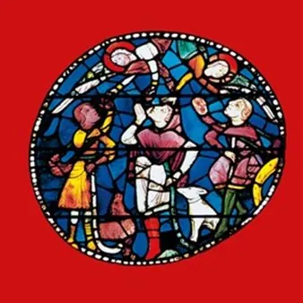

da dom 13 dic a sab 16 gen
Nativitas FVG - Canti e tradizioni natalizie in Friuli Venezia Giulia - XXVI edizione
Nell’ambito della rassegna corale Nativitas, a Gorizia sono in calendario i seguenti concerti: domenica 13 dicembre 2026 ore 15.30 - Chiesa Evangelica, via Diaz 18 “Promessa di Neve”, eseguito da: Coro Go&Sing di Gorizia direttore: Michela De Castro Coro di voci bianche La…
 Indicazioni
Indicazioni
- Costi e prenotazioni
- Costo non indicato · Prenotazione non indicata
- Programma
- Programma da verificare. Apri la fonte ufficiale per orari e possibili aggiornamenti.
- In caso di maltempo
- Nessuna indicazione specifica pubblicata.
- Note
- Acquisito automaticamente dalla fonte.
L’EVENTO
Descrizione completa
Nell’ambito della rassegna corale Nativitas, a Gorizia sono in calendario i seguenti concerti:
domenica 13 dicembre 2026
ore 15.30 - Chiesa Evangelica, via Diaz 18
“Promessa di Neve”, eseguito da:
Coro Go&Sing di Gorizia
direttore: Michela De Castro
Coro di voci bianche La Foiarola di Poggio Terza Armata (GO)
direttore: Lucia Vinzi
Corale C.A. Seghizzi di Gorizia
direttore: Cristina Cristancig
sabato 19 dicembre 2026
ore 20.30 - Chiesa di San Giorgio Martire di Lucinico
“O magnum mysterium”, eseguito da:
Gruppo corale Coral di Lucinis di Lucinico (GO)
Gruppo vocale Iuvenes Harmoniae di Palmanova (UD)
direttore: Matteo Donda
giovedì 24 dicembre 2026
ore 23.45 - Chiesa dei Cappuccini, Piazza San Francesco
celebrazione liturgica allietata dal canto “Natale, luogo di accoglienza e condivisione”, eseguito dal Coro Monte Sabotino di Gorizia
direttore: Marco Mersecchi
ore 23.45 - Chiesa di San Giorgio Martire di Lucinico
La celebrazione della S. Messa della Notte di Natale sarà animata dal Gruppo corale Coral di Lucinis di Lucinico (GO
venerdì 25 dicembre 2026
ore 10.00 - Chiesa di Sant’Ignazio
Santa Messa di Natale, rallegrata dal Coro S. Ignazio di Gorizia
direttore: Liviano Brumat
sabato 26 dicembre 2026
ore 15.30 - Duomo, Largo S. Ilario
Concerto di Natale “Oratorio di Natale di Camille Saint-Saëns”, eseguito dal coro misto Santa Cecilia di Ljubljana (SLO)
direttore: Miha Zupanc Kovač
domenica 10 gennaio 2027
ore 18.00 - Chiesa di SS. Giusto e Giovanni di Dio, via Aquileia 14
“Natale, luogo di accoglienza e condivisione”, eseguito dal Coro Monte Sabotino di Gorizia
s abato 16 gennaio 2027
ore 20.00 - Chiesa di San Giorgio martire di Lucinico
“Echi di Natale”, eseguito dal Coro misto F.B. Sedej di San Floriano del Collio (GO)
direttore: Patrick Quaggiato
Informazioni aggiornate e calendario completo sul sito USCIFVG
Per informazioni aggiornate e calendario completo: https://www.uscifvg.it
IL PROGRAMMA
Programma e orari
Appuntamenti raccolti dalle fonti elencate. Dove manca un orario, non è ancora disponibile in questa scheda.
Programma pubblicato
- ore 15.30 - Chiesa Evangelica, via Diaz 18
- ore 20.30 - Chiesa di San Giorgio Martire di Lucinico
- ore 23.45 - Chiesa dei Cappuccini, Piazza San Francesco
- ore 23.45 - Chiesa di San Giorgio Martire di Lucinico
- ore 10.00 - Chiesa di Sant’Ignazio
- ore 15.30 - Duomo, Largo S. Ilario
- ore 18.00 - Chiesa di SS. Giusto e Giovanni di Dio, via Aquileia 14
- ore 20.00 - Chiesa di San Giorgio martire di Lucinico
INFORMAZIONI UTILI
Prima di partire
- Controllare la fonte prima di partire.
ORGANIZZAZIONE